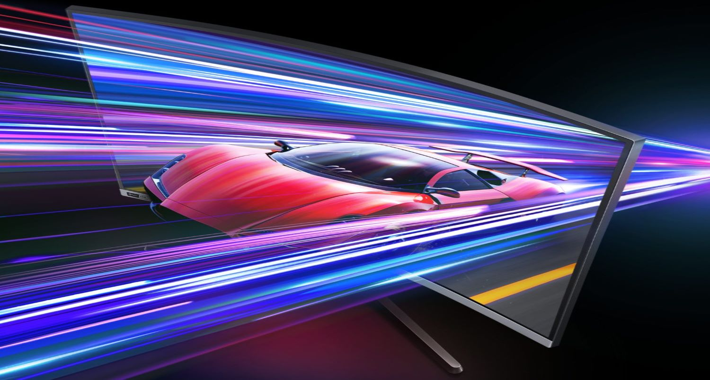
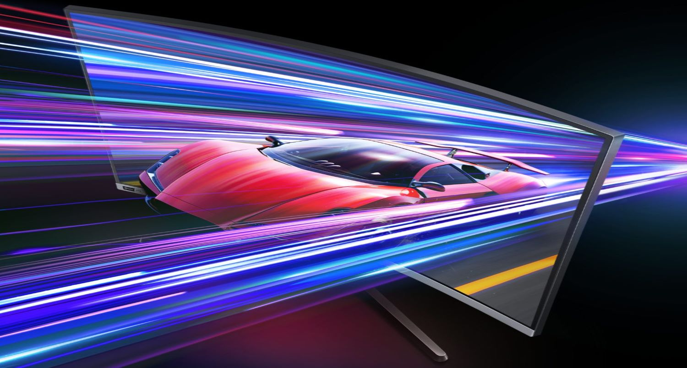
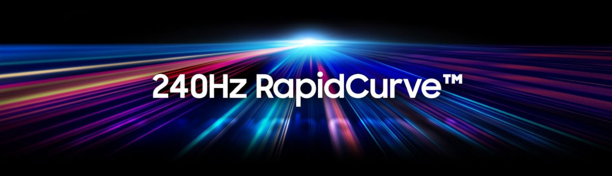
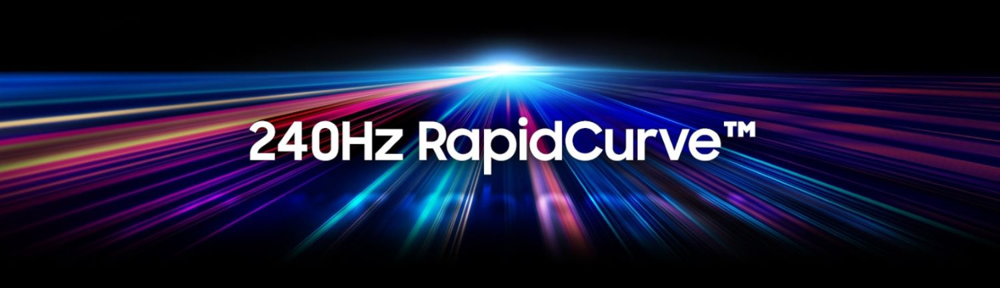
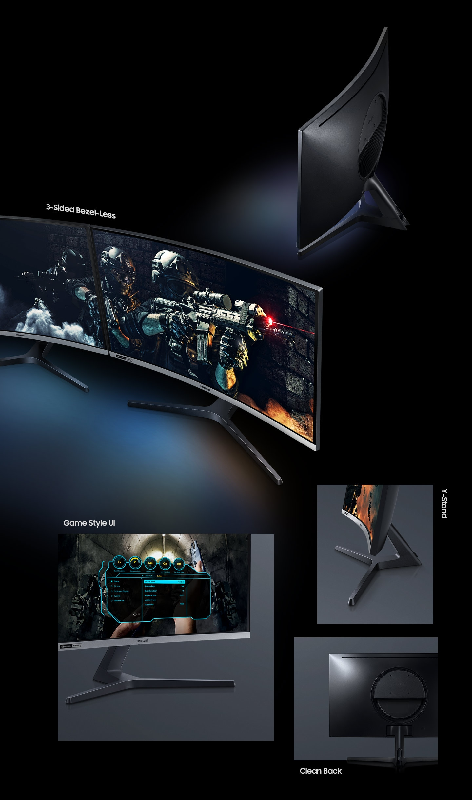
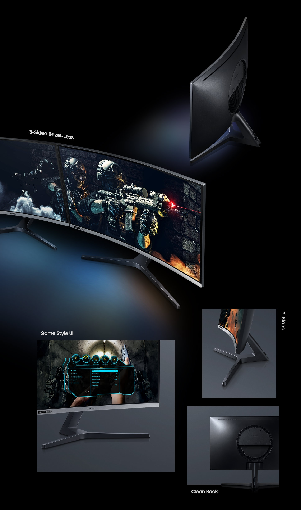
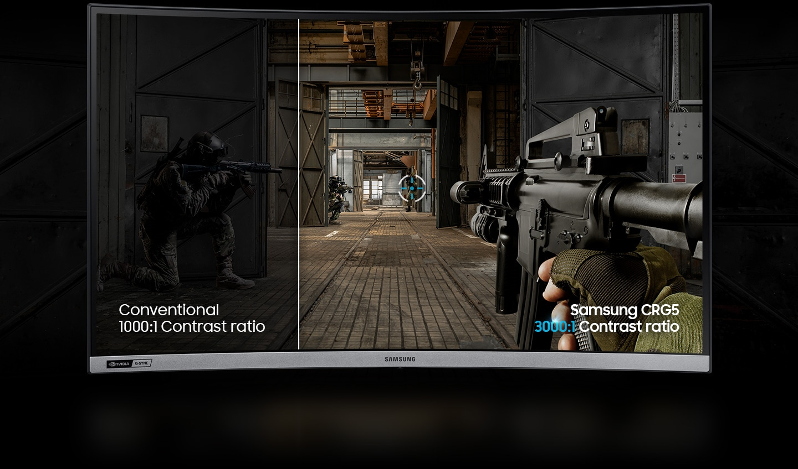
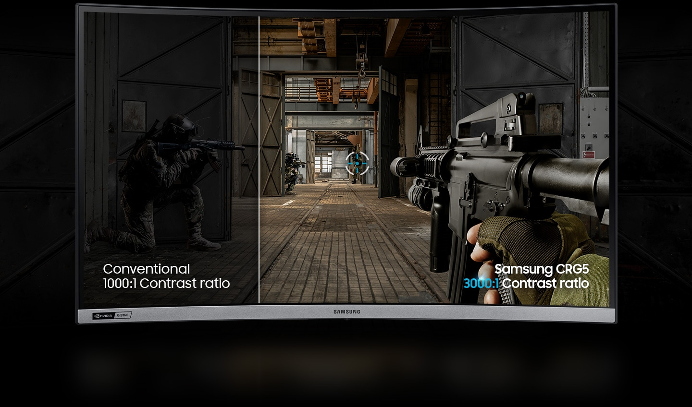

Потрясающая скорость и полное погружение
 

Победа над врагами обеспечена даже в самых динамичных сценариях. Сверхбыстрая реакция с частотой обновления экрана 240 ГЦ устраняет задержку и мгновенно реагирует на действия геймера. Быстрота реакции экрана, плавность и более точное отслеживание перемещения курсора позволяет уверенно уничтожать врагов.
Чемпион среди изогнутых мониторов
Лидер в категории изогнутых мониторов. Samsung стал лидером на рынке изогнутых мониторов, поскольку является пионером в этой области, представив потребителям первый монитор еще в 2015 году. Предложив потребителям целую линейку изогнутых мониторов, Samsung лидирует на этом рынке среди других производителей.
 

Погрузитесь в кривизну
Победная кривизна. Испытайте эффект полного погружения в каждой игре на изогнутом мониторе с кривизной 1500R. Теперь вы чаще будете выходить победителем благодаря более четкой фокусировке точки прицеливания, повышающей концентрацию внимания.
Зрение в безопасности
Технология изогнутых экранов Samsung великолепно адаптирована к особенностям поля зрения человека. Теперь геймер видит весь экран от края до края не меняя направление взгляда. Глаза не устают даже после продолжительной игровой сессии.
Технология G-Sync Compatible
Забудьте о прерывистой игре. Наличие технологии G-Sync Compatible обеспечивает динамическую синхронизации графического процессора и частоты обновления экрана, устраняя дрожание и задержку смены изображения, благодаря чему плавность отображения сохраняется даже в сверхдинамичных игровых ситуациях. Динамичная адаптация скорости обновления экрана - это высокая стабильность изображения в самых ресурсоемких играх.
 

 
